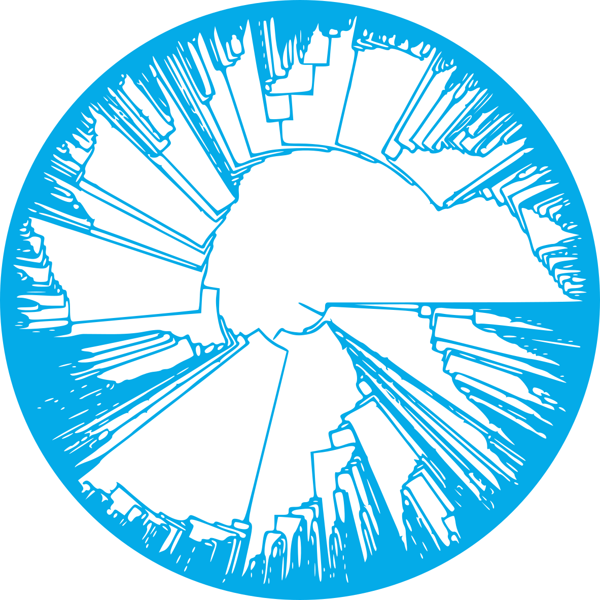
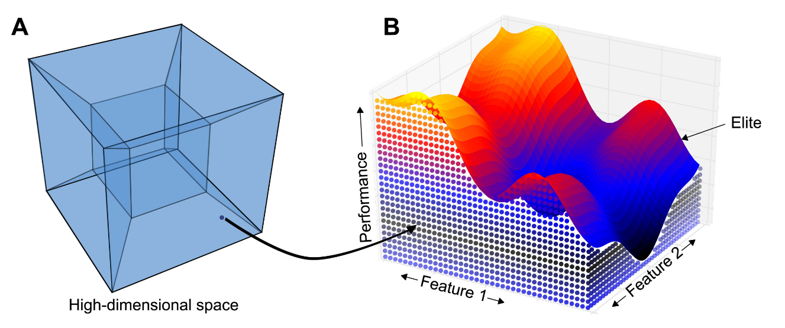
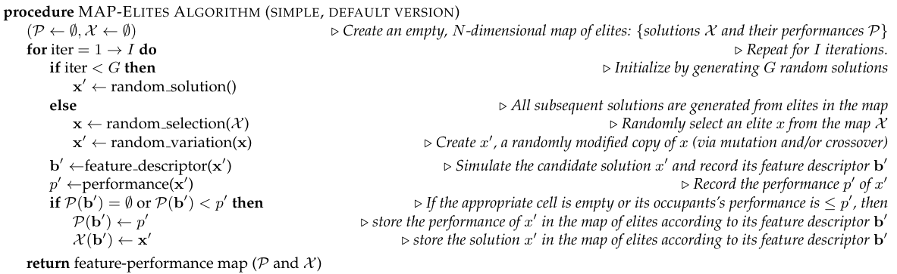
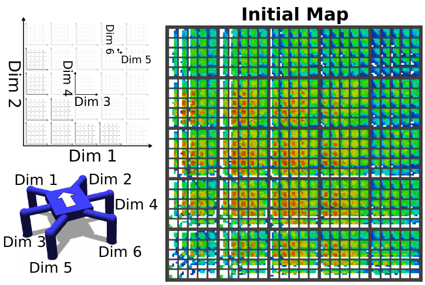
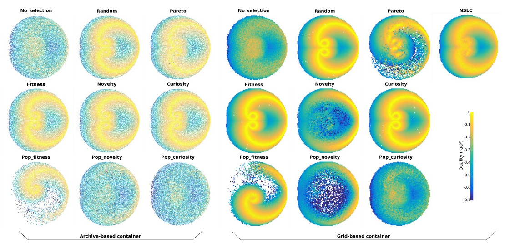
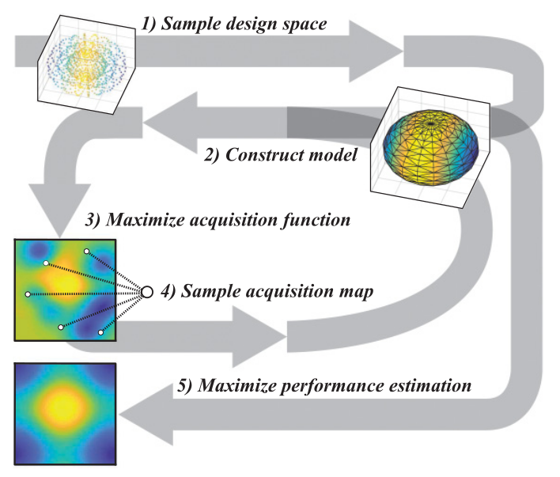
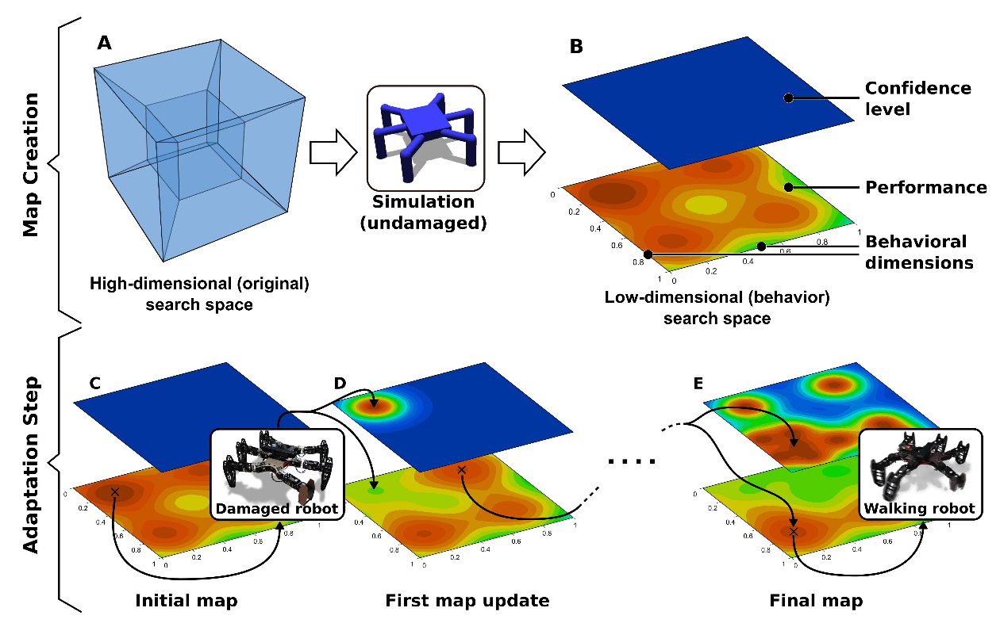
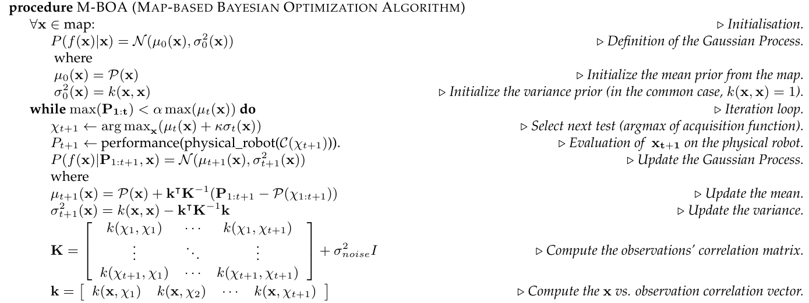

Evolutionary Computation
Quality Diversity

Illuminating search spaces

Illuminate the fitness potential of each area of the feature space (behavior space)
Mouret, Jean-Baptiste, and Jeff Clune. "Illuminating search spaces by mapping elites." arXiv preprint arXiv:1504.04909 (2015).
MAP-Elites

Mouret, Jean-Baptiste, and Jeff Clune. "Illuminating search spaces by mapping elites." arXiv preprint arXiv:1504.04909 (2015).
MAP-Elites

Cully, Antoine, et al. "Robots that can adapt like animals." Nature 521.7553 (2015): 503-507.
Archive differences

Cully, Antoine, and Yiannis Demiris. "Quality and diversity optimization: A unifying modular framework." IEEE Transactions on Evolutionary Computation 22.2 (2017): 245-259.
Speeding up evaluation

Surrogated-Assisted Illumination (SAIL)
Gaier, Adam, Alexander Asteroth, and Jean-Baptiste Mouret. "Data-efficient design exploration through surrogate-assisted illumination." Evolutionary computation 26.3 (2018): 381-410.
SAIL

Gaier, Adam, Alexander Asteroth, and Jean-Baptiste Mouret. "Data-efficient design exploration through surrogate-assisted illumination." Evolutionary computation 26.3 (2018): 381-410.
Adaptive behavior

Cully, Antoine, et al. "Robots that can adapt like animals." Nature 521.7553 (2015): 503-507.
Adaptive behavior

Cully, Antoine, et al. "Robots that can adapt like animals." Nature 521.7553 (2015): 503-507.
Optional Exercise
If you didn't watch it during the first lecture, watch the MAP-Elites adaptive behavior video.